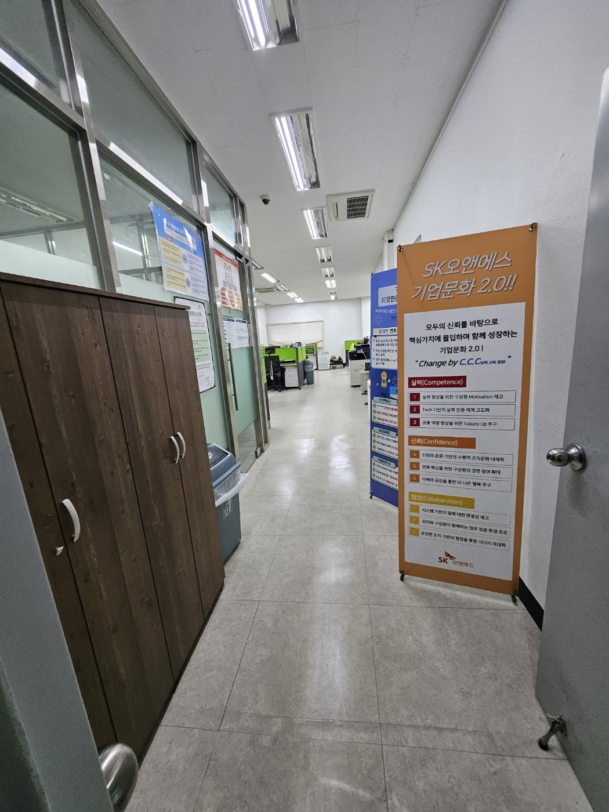
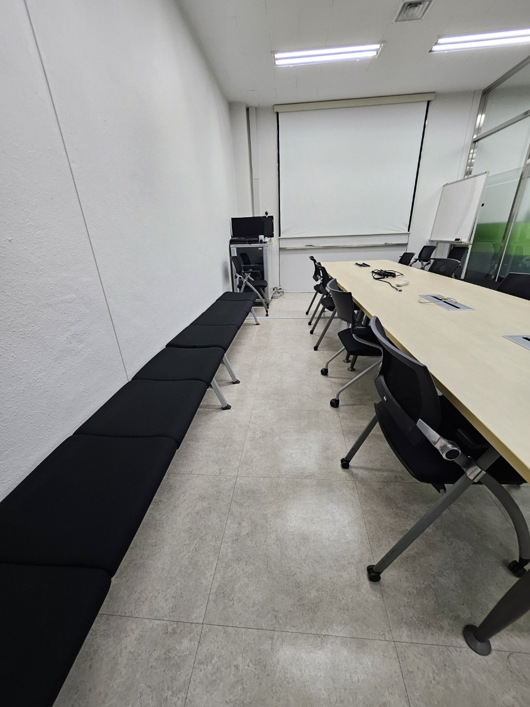
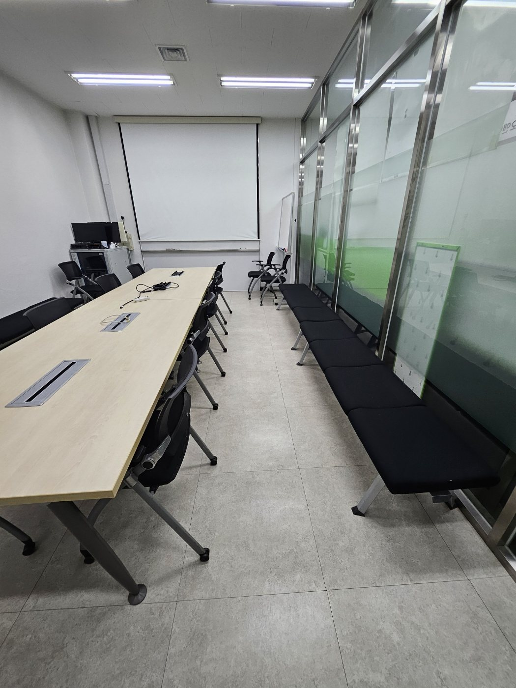
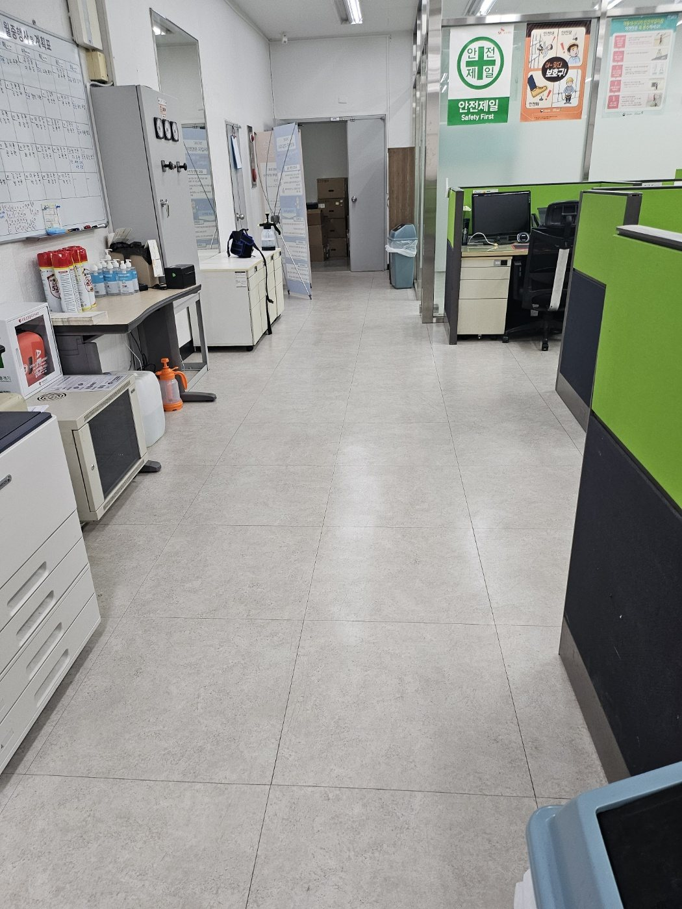
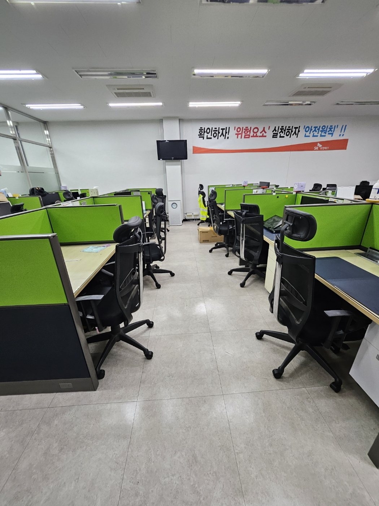
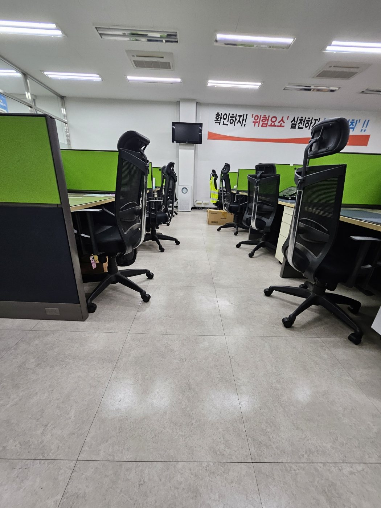

김해 진례공단 기업체 사무실 정기청소 | 회의실·업무공간 관리
김해 진례공단권 기업체 사무실을 기준으로 구성한 정기청소 작업사례입니다. 기업체 사무실은 좌석이 밀집된 업무공간, 회의실, 복도, 출입구가 서로 연결돼 있어 한 공간만 관리하기보다 직원 이동 동선을 기준으로 전체 구역을 나눠 관리하는 것이 효율적입니다.
현장 사진으로 보는 작업 내용
각 사진 아래에 실제 공간에서 확인할 수 있는 관리 포인트를 자세히 설명했습니다. 단순히 사진만 나열하지 않고 바닥, 가구 주변, 공용동선과 장비 작업 범위를 함께 확인할 수 있도록 구성했습니다.

기업체 사무실 공용복도 관리
부서와 회의공간을 연결하는 복도는 직원 이동이 집중되는 구역입니다. 바닥 전체를 정리하면서 출입문 앞, 파티션 가장자리와 벽면 쪽까지 함께 확인해 먼지가 다시 유입되는 부분을 줄입니다.

회의실 바닥과 좌석 주변 정리
회의실은 여러 사람이 짧은 시간에 반복 이용하기 때문에 테이블 아래와 의자 주변에 먼지와 잔여물이 쉽게 쌓입니다. 좌석 사이 통로를 확보하고 바닥 전체를 균일하게 정리합니다.

회의실 측면 동선까지 관리
테이블 주변뿐 아니라 벽면 쪽 대기 의자와 장비 주변도 정기청소 범위에 포함할 수 있습니다. 사람이 자주 오가는 구역과 잘 보이지 않는 가장자리를 함께 관리합니다.

업무공간 중앙 통로 정리
파티션형 사무실은 좌석 사이 중앙 통로가 가장 빠르게 오염되는 구간입니다. 직원 이동 동선을 따라 바닥을 정리하고 의자 바퀴 주변과 책상 하부까지 확인합니다.

사무실 좌석 사이 바닥 관리
좌석이 여러 줄로 배치된 공간은 바닥의 먼지가 의자 밑과 파티션 아래에 모이기 쉽습니다. 업무에 방해가 되지 않도록 이동 가능한 범위에서 통로부터 순서대로 관리합니다.

기업체 사무공간 전체 상태 확인
넓은 사무실은 특정 구역만 깨끗해도 전체가 정돈돼 보이지 않을 수 있습니다. 입구에서 안쪽 좌석까지 바닥 상태를 함께 확인해 공간 전체의 청결감을 유지합니다.

내부 복도와 사무실 연결부 관리
복도에서 사무실로 연결되는 구간은 외부 먼지와 내부 생활먼지가 만나는 곳입니다. 문턱과 출입구 주변, 수납장 옆까지 놓치지 않고 정리합니다.

회의실 마감 상태 확인
정기청소 후 회의실은 테이블과 의자 배치, 바닥 상태를 다시 확인합니다. 다음 이용자가 바로 사용할 수 있도록 이동 동선을 정리하고 눈에 띄는 잔여 먼지를 마무리합니다.
김해 사업장 청소 무료 방문견적
사무실, 공장, 학원, 상가, 화장실, 회의실 등 사업장 유형과 이용량에 맞춰 작업 범위와 관리 주기를 상담합니다.